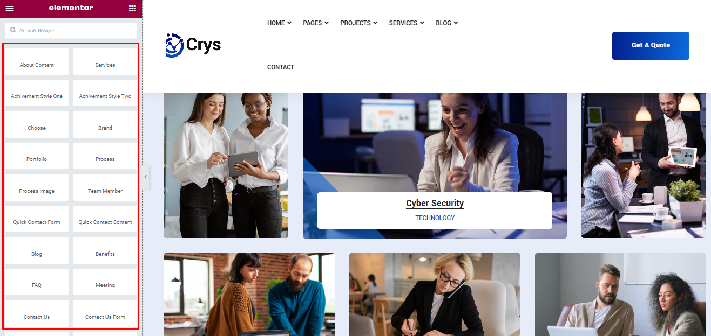
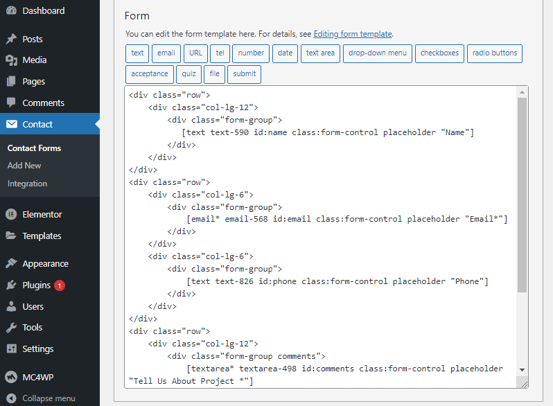

Thank you for purchasing our Theme. We hope that you find all your questions regarding this Theme answered in this Documentation as much in details as possible. However, if you still need support, do not hesitate to contact us at our support forum for this Theme. If you have any questions that are beyond the scope of this help file, please feel free to email me. Thanks so much!
Crysa is IT Solutions & Services Theme designed specifically for technical, cyber security, engineering, computing, entertaining, business, merchandising, eCommerce, educational & scientific purposes and many more. This is highly customizable – looks awesome on tablets and mobile devices. This Theme comes with 2 unique Demo and included 15+ valid pages. All standalone pages such as About, Team, Projects,Choose Us, Blog, 404 or others essentials pages are included. Well commented code, well-documented file structure and 24/7 professional and ultra-fast Support.
Once you've downloaded the installation file on ThemeForest, extract it and locate a file called crysa.zip. You can install the theme by using one of two installation methods:
Activate
to activate the newly installed theme.Activate
below your newly uploaded theme.Once installation is complete, your crysa theme will be ready to use. You should now see crysa theme as active .
Great - you can now start building your site!
The error: "Maximum Execution Time Exceeded in WordPress"
Instructions about memory limit increase. you can increase the maximum upload size in WordPress. Edit the .htaccess file in your WordPress site’s root folder and add the following code:
php_value max_execution_time 500
php_value memory_limit 64M
php_value post_max_size 4M
php_value max_input_time 500
php_value upload_max_filesize 10M

All the theme options are the location crysa Options of Dashboard Menu Bar. This section will explain each option in details.
Prebuilt fotter is the default footer and header builder is for elementor fotter which is build by elementor.If you want to change prebuild fotter please go widget section and you want to change otherwise if you want to change elementor header please go Dashboard > crysa Builder .
The theme lots of easy to use options to customize the design of your site. Most of your theme options can be found in the live WordPress theme customizer. Simply navigate to Appearance > Customize to make changes to the design of your website.There you can find all options to change anything in theme, it is easy and intuitive. This is live customizer, so all changes you can see at once, without saving, then when you like result, save.
To work with widgets in sidebars or in footer, you need to goto wp admin panel > widgets. There you will see areas, where you can place widgets ( in right area of the page ) and available widgets ( in left area of the page ). Simply drag and drop widget to the widget area you want, then configure widget settings, and you will see the result in your website.
The crysa theme has two own styles "crysa" and "contact-us". if you want you may use both of them. Don't worry, I will show step by step how to use it.

crysa is fully child theme compatible. We have attached a basic child theme to the download package which contains the minimum of required files. If you are planing any code customisations we highly recommend to do this inside the child theme! Learn more about child themes here
Thank you so much for purchasing this product. If you have a more general question relating to this product on ThemeForest, you might consider visiting the forums and asking your question in the "Item Discussion" section
{kind=link}
{kind=link}